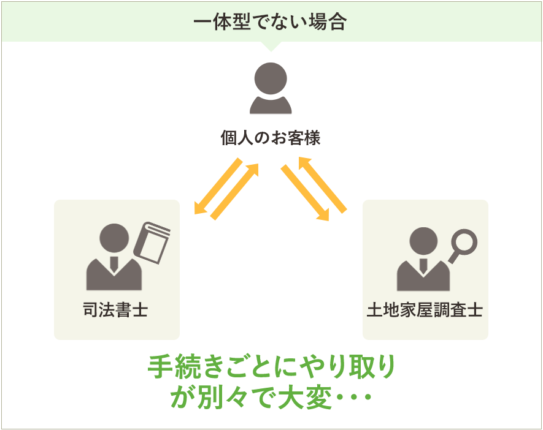

司法書士・土地家屋調査士による不動産登記の専門家です。両資格で不動産登記をワンストップでサービスいたします。
当事務所は、司法書士と土地家屋調査士、両資格を保有することによって豊島区を中心とした、都内で近郊のお客様へのワンストップサービスを提供しております。
一体型のメリット（司法書士と土地家屋調査士の関係について）
司法書士・土地家屋調査士の両資格で不動産登記のワンストップサービスを提供
司法書士と土地家屋調査士は不動産登記の専門家です。
当事務所は司法書士と土地家屋調査士両資格を保有することによって、近郊のお客様へのワンストップでシームレスなサービスを提供いたします。
ワンストップサービスのメリット


- ・ お客様を行ったり来たりさせません。
- ・ お客様との電話窓口がひとつで済みます。
- ・ どんな案件にも対応可能です。
- ・ 事務所間の書類の受け渡し等、事務処理の無駄が省け、 時間短縮できます。
- ・ サービス費用が安くなります。
ワンストップサービスの依頼例
司法書士・土地家屋調査士の両資格で不動産登記のワンストップサービスを提供
表示に関する登記
土地家屋調査士
-
建物滅失登記
建て替えに伴い、取り壊した建物の登記簿を抹消するための登記
-
建物新築登記
新築した建物の登記簿を作るための登記
-
土地地目変更登記
登記の地目が「宅地」以外の場合に宅地とする登記
権利に関する登記
司法書士
-
建物新築登記
新築した建物の登記簿を作るための登記
-
建物滅失登記
建て替えに伴い、取り壊した建物の登記簿を抹消するための登記
土地家屋調査士
表示に関する登記は、土地家屋調査士という資格者がお客様に代わって登記申請業務を行っています。この業務は司法書士が行なうことはできません。
表示に関する登記の登記事項は、土地であれば「所在」「地番」「地目」「地積」、建物であれば「所在」「家屋番号」「種類」「構造」「床面積」です。
これらの状況に変更があった場合に土地家屋調査士は地積測量図や建物図面を作成し、皆様の代理人として登記手続を行っております。
マイホームを新築した・古い建物が未登記だった → 建物表題登記（表示登記）
分譲マンションが完成した → 区分建物表題登記（区分建物新築登記）マイホームを増築した → 建物増築登記（表題変更登記）
建物を取壊した → 建物滅失登記
土地を1筆にまとめたい → 土地合筆登記
地目を宅地に変更したい → 土地地目変更登記
司法書士
権利に関する登記は、文字通り不動産の権利関係（所有者は誰か、抵当権は付いているか等）についての登記です。
お客様が一般的にイメージする登記といえばこの登記ではないでしょうか。表示に関する登記とは異なり、申請義務はありません。
しかし、登記をしなければ、最悪不動産を取得できなくなってしまう等重大なトラブルに巻き込まれてしまう可能性があります。
たとえ相続などの場合でも、なるべく早く登記申請をしましょう。
不動産を購入した・贈与したい → 所有権移転登記
建物表題登記が完了した → 所有権保存登記
引っ越した → 住所変更登記
融資を受ける → 抵当権（根抵当権）設定登記
ローンを返し終えた → 抵当権（根抵当権）抹消登記
巣鴨パートナー事務所
〒 170 - 0002東京都豊島区巣鴨1-23-7YSキュービックビル 2階
不動産(建物)登記について
家や土地を買ったときに「その所有権が誰にあるか（権利部）」「大きさや場所など（表題部）」などを届け出て、登記簿に記載してもらうことです。
登記簿とは不動産（土地建物）の戸籍簿のことで、お客様の大切な財産である土地・建物の現況と権利関係を一般の方々に公開することで、取引の安全と円滑をはかることを目的としたのが不動産登記です。
不動産登記は、「表示に関する登記」と「権利に関する登記」に大きく分かれます。
表示に関する登記は不動産の面積などの現況を、権利に関する登記は不動産の所有者などの権利関係を扱っています。
所有権など権利に関する「権利部」の登記は、特に登記は義務付けられていませんが、所有権・抵当権・地上権・賃借権・地役権などを登記することができます。
金融関係のお客様
金融機関のご融資担当者向けに、建物登記のワンストップサービスの実現により、ご融資の実行を迅速に無駄なく支援いたします。
ご存知のように、不動産登記は、司法書士と土地家屋調査士が、それぞれ分担して手続きをしています。
通常は、設定や抹消登記を依頼している司法書士が、土地家屋調査士と連携して、窓口一つで建物登記をするワンストップサービスにより、ご融資の実行まで、迅速、かつ、効率的にサポートいたします。
- 工事の進捗状況を聞いて、登記の最短スケジュールを単独で、迅速に決定することにより、ご融資の実行までスムーズに進めることができます。
- 表示から権利までのすべての登記の必要性や必要書類の判断ができるので、ご融資担当者様の時間節約や事務作業の負担軽減につながります。
- お客様への書類のご案内やご本人確認など、一人の資格者が行うことができますので、お借り入れをするお客様にとっても、何人もの資格者と話す必要がなく、余計な時間や労力をかけずに済みます。
- 別々の事務所に依頼するよりも、お客様への登記費用の負担が軽くなります。
不動産・建設関係のお客様
建物を新築した場合、司法書士と土地家屋調査士が、それぞれ分担して登記を担当します。
通常は、両者が連携していますので、一人の資格者が両方の手続きができるワンストップサービスにより、お引渡まで、迅速かつ効率的にサポートいたします。
- 工事の進捗状況から、登記の最短スケジュールを単独で、迅速に決定することができます。
- 表示から権利までのすべての登記の必要性や必要書類の判断を素早くできるので、営業や登記事務担当の方の時間節約や事務作業の負担軽減につながります。
- お客様への書類のご案内やご本人確認など、一人の資格者が行うことができますので、お客様（建築主）や金融機関の融資担当の方が、何人もの資格者と話す必要がなく、余計な時間や労力をかけずに済みます。
- 一人の資格者が、すべての登記を行うことにより、表示と権利の登記の間隔が最小限で済み、結果として、登記完了までスムーズに進めることができます。
- 別々の事務所に依頼するよりも、お客様への登記費用の負担が軽くなります。
個人のお客様
新築したお客様、建売分譲住宅を購入したお客様は、最後に登記という手続きが必要になります。
ハウスメーカー、不動産会社や銀行から紹介された司法書士と土地家屋調査士に、登記手続きをそのまま頼むのが一般的です。しかし、それは登記費用について適正な価格であるか、お客様ご自身で検討されたうえでの決定でしょうか？報酬は、自由化されていて事務所によって異なるため、適正な価格かどうか知る機会のないまま支払っていると思います。
実際に費用を負担するのはお客様です。
当事務所にご依頼いただけば、ワンストップによる価格面でのメリットをお客様に実感していただけるはずです。
- 書類のご案内やご本人確認など、一人の資格者がまとめて行いますので、お客様にとって、何人もの資格者と話す必要がなく、余計な時間や労力がかかりません。
- 司法書士業務と土地家屋調査士業務は一環性があり、両方の事務処理を無駄なく行うことにより経費を削減することができます。それにより、お客様が支払う司法書士報酬と土地家屋調査士報酬を割安にすることができます。